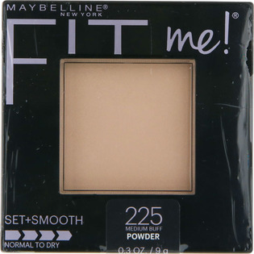

返回列表
产品名称：メイべリン フィットミー パウダー ２２５ ピンクオークル

日本ロレアル メイべリン フィットミー パウダー ２２５ ピンクオークル ＿
メーカー 日本ロレアル
JANコード 4935421282710
商品の特徴
●どんな肌にもフィットします。
●一日中テカらないさらさら肌へ。
●汗、皮脂、テカリの原因を抑えます。
●細やかなパウダーで毛穴をカバー＊１、なのに粉っぽくなりません。
＊１メイクアップ効果
成分・分量
【成分】
タルク、合成フルオロフロゴパイト、ステアリン酸Ｍｇ、ネオペンタン酸イソデシル、ナイロン－１２、カプリリルグリコール、［＋／－］ マイカ、酸化チタン、酸化鉄
用法及び用量
【使用方法】
パフに適量を取り、お肌にポンポンと優しくあてながら重ねます。